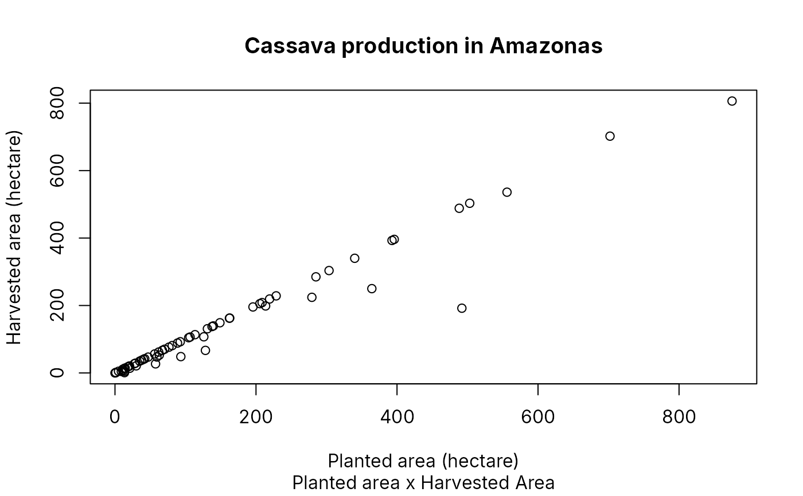

agriculture_amazonas - Plant production data from the Institute of Sustainable Agricultural and Forestry Development of Amazonas - IDAM (2023).
agriculture_amazonas.RdThis database, which is the consolidation of data from IDAM's activity reports, provides crop production data for crops that this institute considers a priority.
Format
`agriculture_amazonas' A data frame with 1072 rows and 13 columns:
- municipality
Municipality
- local_unit
Local Unit of the Institute
- n_beneficiary
Number of assisted beneficiaries
- planted
Planted area in hectares (ha)
- harvested
Harvested area in hectares (ha)
- production
Production (in the unit of measurement - measure)
- estimated_n_beneficiary
Estimate of the number of beneficiaries
- estimated_planted
Estimate of the planted area (ha)
- estimated_harvested
Estimate of the harvested area (ha)
- estimated_production
Estimate of production (in the unit of measurement - measure)
- measure
Unit of Measurement of production
- cultivation
Cultivation
- year
Year of cultivation
Source
INSTITUTO DE DESENVOLVIMENTO AGROPECUÁRIO E FLORESTAL SUSTENTÁVEL DO ESTADO DO AMAZONAS (IDAM). Relatório de Atividades (RAT 23-2). Manaus: IDAM, 2023. Disponível em: https://www.idam.am.gov.br/biblioteca/relatorio-de-atividades-rat-23-2/.
Examples
# \donttest{
# Cassava production plot (Gráfico de Produção de Mandioca)
mandioca_prod <- agriculture_amazonas[agriculture_amazonas$cultivation == "Mandioca", ]
plot(
mandioca_prod$planted,
mandioca_prod$harvested,
xlab = "Planted area (hectare)",
ylab = "Harvested area (hectare)",
main = "Cassava production in Amazonas",
sub = "Planted area x Harvested Area"
)

# }